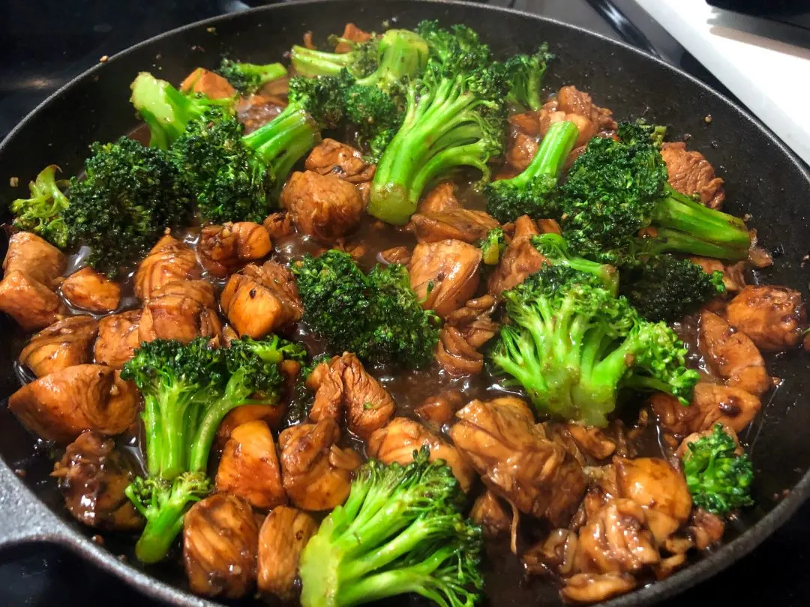

Ryan's Chicken and Broccoli Special

Our chicken and broccoli masterpiece
This is our head chef Ryan's go to special, eaten twice daily with only mild changes based on his mood. We recommend this dish to those who enjoy the basics of life and working out 10 times a week.
Some other examples of this recipe
500g Chicken Breast
1 Head of Broccoli
Ryan's Special Sauce
Sesame Seeds
Instructions
Dice Chicken into chunks
Boil broccoli head
Drain and break up broccoli pieces (around 300 grams)
Drizzle special sauce over chicken, layered in oven pan
Cook chicken at 250 degrees for 15 minutes untill lightly golden
Combine broccoli into the mix and lather with large helpings of special sauce
Cook combined mixture in oven at 250 for remaining 10 minutes
Set aside to cool before serving with sesame seeds to garnish